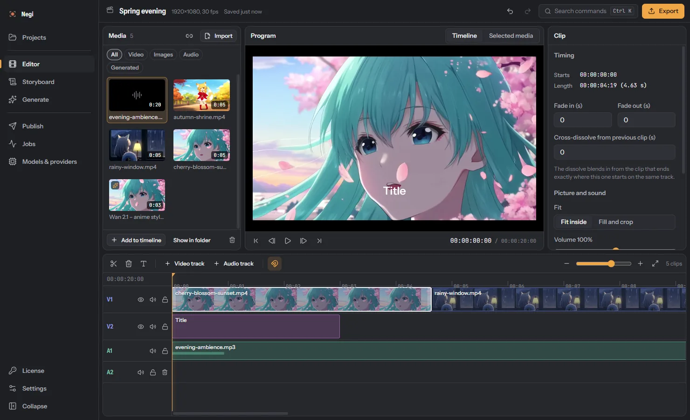
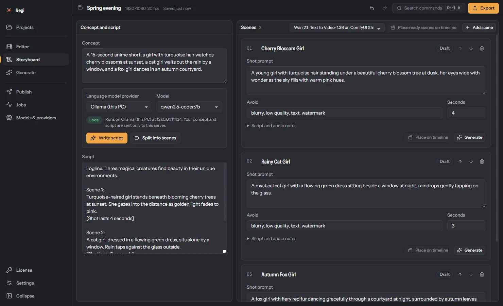
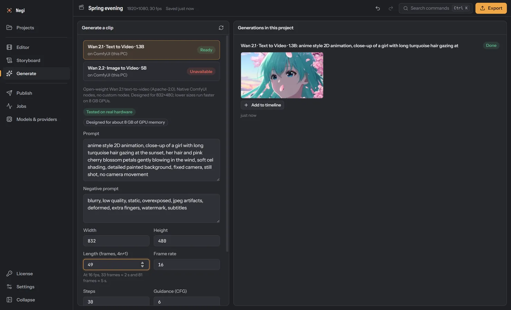
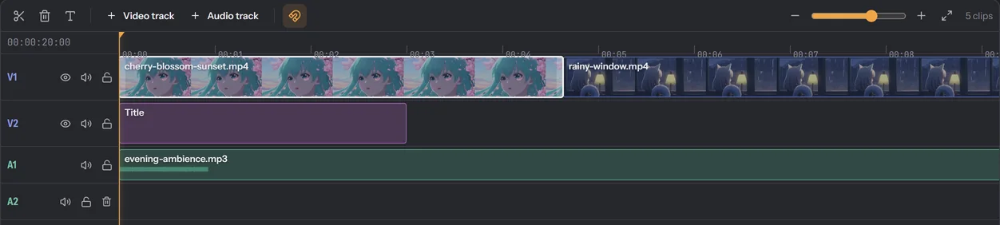
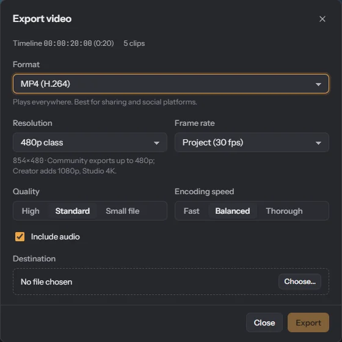

Make AI video on your own PC.
Negi is a Windows app for making AI video. A language model drafts the script and scenes, an open video model renders each scene on your graphics card, and a timeline editor cuts it all together. Your projects stay on your computer.

Made on one 8 GB graphics card.
These clips came out of Negi on a GeForce RTX 3060 Ti with the open Wan 2.1 text-to-video model. They're shown as generated, only looped for this page.
Measured generation times
| Size | Length at 16 fps | Steps | Time | Peak GPU memory |
|---|---|---|---|---|
| 480 × 272 | 17 frames, 1 s | 20 | 17 s, models already loaded | 7.3 of 8 GB |
| 832 × 480 | 33 frames, 2 s | 30 | 2 min 42 s | 7.5 of 8 GB |
| 832 × 480 | 49 frames, 3 s | 30 | 4 min 39 s to 5 min 17 s, three clips | 7.3 to 7.5 of 8 GB |
Measured on Windows 11 with a GeForce RTX 3060 Ti (8 GB), 64 GB of memory, ComfyUI 0.39.0 and Wan 2.1 text-to-video 1.3B (fp16). Each time is one run, from sending the job to the finished file, and includes loading the models unless noted. Peak GPU memory is for the whole card, including what Windows uses. Your times will differ with your graphics card, model, size, length and steps.
How it works
Four steps from an idea to a video file. Every picture here is a screenshot of Negi; open one to see it full size.
-
Write the script
Describe your idea. A language model writes a script and splits it into scenes, each with a shot prompt you can edit before anything is generated. This script came from qwen2.5-coder 7B running in Ollama on the same PC. You can also write everything yourself.

-
Generate the scenes
Send a scene, or your own prompt, to ComfyUI on your PC. Negi shows which models are ready, follows the progress and adds the finished clip to your project.

-
Edit on a timeline
Arrange the clips with your own footage, images and music on as many video and audio tracks as you need. Trim, split, add titles, fades and cross-dissolves, and undo anything. The monitor gives a quick preview; the exported file is the exact result.

-
Export
Render MP4 (H.264 or H.265), WebM (VP9) or ProRes. Negi checks every file with FFmpeg before it saves it, so a failed render never replaces a good one.



What Negi does today
Everything in the first list is tested end to end on Windows. Items marked Preview are built, but so far only tested against simulated services.
Script and scenes from an idea
A language model drafts the script and the shot list. Tested with Ollama on the same PC.
Video generation on your PC
Scenes render through ComfyUI on your graphics card. Wan 2.1 text-to-video comes as a ready, tested template.
A multi-track editor
Video and audio tracks, trim and split, titles, fades, cross-dissolves, clip volume and undo.
Your own media
Import video, images and audio. Every file is checked with FFmpeg before it's added.
Checked exports
H.264, H.265, VP9 and ProRes, verified before saving. FFmpeg comes with the installer.
Work that's safe
Projects save as you go and keep snapshots. Generations and exports run as jobs you can follow and cancel.
In preview
Publish and schedule Preview
YouTube, Mastodon, Bluesky, Telegram and Discord, with your own accounts. YouTube needs your own Google API project.
Analytics and comment inbox Preview
Views and comments from connected accounts, with replies you approve.
More model services Preview
LM Studio and cloud language models through the OpenAI-compatible connection.
Image to video Preview
A Wan 2.2 template is included but untested. It shows as unavailable until that model is installed.
Not available yet: macOS and Linux versions, a code-signed installer, and automatic updates. Negi doesn't update itself; new versions are published on this page.
What you need
Editing and export need only Windows. Generating video on your own PC is what needs a graphics card and about 16 GB more disk space.
- Windows
- Tested setup: Windows 11, 64-bit
- Built for Windows 10 and 11, 64-bit.
- Graphics card
- Tested setup: NVIDIA GeForce RTX 3060 Ti, 8 GB
- Only needed to generate video on your PC. Wan 2.1 used up to 7.5 GB of it. Other cards haven't been tested yet.
- Memory
- Tested setup: 64 GB
- The minimum hasn't been measured yet.
- Disk space
- Tested setup: About 600 MB for Negi
- Plus about 6 GB for ComfyUI and 9.2 GB for the Wan 2.1 models. A local language model adds about 5 GB. Projects grow with your media.
- Internet
- Tested setup: Optional
- Not needed to edit, export or generate with local models. Only for downloads, cloud model services, publishing, and checking a paid license.
The tested setup is the only one we can vouch for. Minimum and recommended specs will be listed once they've been measured.
In the installer
- Negi itself
- FFmpeg 9.0.2, for checking media and exporting
- ComfyUI templates for Wan 2.1 text-to-video and Wan 2.2 image-to-video
You add, for local video
- ComfyUI portable for NVIDIA: about 2 GB to download, 6 GB unpacked
- The Wan 2.1 models: 9.2 GB
- Optional: Ollama with a model such as qwen2.5-coder 7B (4.7 GB), LM Studio, or a cloud service
Set up video generation
Download ComfyUI portable for NVIDIA from ComfyUI's releases on GitHub and unpack it with 7-Zip.
From Comfy-Org's Wan 2.1 files on Hugging Face, put
wan2.1_t2v_1.3B_fp16.safetensorsinComfyUI\models\diffusion_models,umt5_xxl_fp8_e4m3fn_scaled.safetensorsinComfyUI\models\text_encodersandwan_2.1_vae.safetensorsinComfyUI\models\vae.Start ComfyUI with
run_nvidia_gpu.batand leave it running.In Negi, open Models & providers, add ComfyUI on this computer and test it. Wan 2.1 then shows as Ready on the Generate page.
Editions
Writing, generating and editing work the same in every edition. The editions differ in how large you can export and in posting to your social accounts.
-
Community
Free download, no key
480plargest export, such as 854 × 480
- Write, generate and edit
- Included
- Post to social accounts Preview
- Not included. Negi prepares the file and text for you to post yourself.
- Schedule posts
- Not included
- Analytics and comment inbox Preview
- Not included
- License check-ins
- None
-
Creator
Activation key
1080plargest export, such as 1920 × 1080
- Write, generate and edit
- Included
- Post to social accounts Preview
- Up to 5 accounts, 5 per post
- Schedule posts
- Included
- Analytics and comment inbox Preview
- Not included
- License check-ins
- Yes; works offline for 7 days by default
-
Studio
Activation key
4Klargest export, such as 3840 × 2160
- Write, generate and edit
- Included
- Post to social accounts Preview
- Up to 50 accounts, 15 per post
- Schedule posts
- Included
- Analytics and comment inbox Preview
- Included
- License check-ins
- Yes; works offline for 7 days by default
Activation keys come by email from mustafa123.my53@gmail.com; enter one on Negi's License page. Items marked Preview are built but so far only tested against simulated services. If a key ends, Negi keeps working as Community and your projects stay as they are.
Download Negi
- Version
- 0.1.7
- Released
- 28 October 2026
- Size
- 175 MB
- System
- Windows 10 and 11, 64-bit
Negi installs for your Windows user only and needs no administrator rights. Remove it any time under Settings, Apps, Installed apps.
Download stopped or failed? Start it again from the release page. The complete file is 183,260,983 bytes (File Explorer shows this under Properties).
Before you run the installer
Download only from this page or Negi's GitHub releases. A copy from anywhere else can't be checked against the published checksum.
Check the file. Open PowerShell, paste this command and press Enter. It prints
Truewhen your file matches the SHA-256 checksum published for this release.(Get-FileHash "$env:USERPROFILE\Downloads\Negi-Setup-0.1.7-x64.exe").Hash -eq "000aeb1b6cbcfa77ad714da384ebae180d76c8bc564d0769a89350cda282bdae"Saved it to another folder? Change the folder in the command. Checksum:
000aeb1b6cbcfa77ad714da384ebae180d76c8bc564d0769a89350cda282bdaeIf it prints False, stop. Delete the file and download it again from this page. Don't run a file that doesn't match.
Why Windows may warn you
The installer isn't code-signed yet, so Windows can't show who published it, and SmartScreen will probably say “Windows protected your PC”. That warning is about an unknown file, not a malware finding. A matching checksum proves your file is exactly the one published on GitHub; it can't prove the software is harmless.
If the check printed True and you trust this project, choose More info, make sure the file is Negi-Setup-0.1.7-x64.exe, then Run anyway. If you're unsure, don't run it. Never turn off Microsoft Defender or SmartScreen for Negi; it doesn't need that.
What Negi sends over the internet
Nothing by default
The app has no telemetry, analytics or ads. Editing, export and local generation don't use the internet.
Model services you add
Ollama, LM Studio and ComfyUI on your PC stay on your PC. A cloud service you add receives the prompts and scripts you send it, and every AI action shows where it goes.
Platforms you publish to
Your video and post text go to the accounts you connect, only when you publish.
License check-ins, with a paid key only
Your activation key, a random installation ID, a one-time number and the app version. Never projects, prompts or media. Paid features keep working offline for 7 days by default after the last check-in.
This website has no analytics and sets no cookies. Your browser loads the latest release details from GitHub, which hosts the page and the downloads.
Questions
Does Negi run on my computer or in the cloud?
On your computer. Editing and export happen in the app, and video generation runs in ComfyUI on your own graphics card. For writing scripts you choose: a local model in Ollama, or a cloud service you add yourself.
Does it need an internet connection?
Not to edit, export or generate with local models once they're downloaded. You need a connection to download models, use a cloud service, publish, and to check a Creator or Studio key, which keeps working offline for 7 days by default.
Which graphics card do I need?
Generating video was tested on an NVIDIA GeForce RTX 3060 Ti with 8 GB, and Wan 2.1 1.3B is made for cards of about that size. Other cards haven't been tested yet.
Without a suitable card you can still write, edit and export: export runs FFmpeg on your processor. A PC without an NVIDIA card hasn't been tested yet either.
Are the AI models included?
No. The installer contains Negi and FFmpeg. ComfyUI and the Wan 2.1 models are separate free downloads, about 11 GB together; Set up video generation lists the files and where they go.
How much disk space does it take?
About 600 MB for Negi. Generating video locally adds about 6 GB for ComfyUI and 9.2 GB for the Wan 2.1 models, and a local language model about 5 GB more. A generated 3-second clip is usually under 1 MB; your own media and exports take what they take.
Why does Windows warn me about the installer?
The installer isn't code-signed yet, so Windows doesn't know its publisher and SmartScreen shows a warning. Check your download before you decide to run it, and don't run it if the check fails.
What's the difference between the editions?
Community is free and does everything up to a 480p export. Creator adds 1080p export and publishing; Studio adds 4K, analytics and a comment inbox. Publishing, analytics and the inbox are still in preview. Compare editions.
How do I get an activation key?
Email mustafa123.my53@gmail.com, then enter the key on Negi's License page.
Is there a Mac, Linux or Android version?
Not yet. Negi runs on Windows 10 and 11 (64-bit) only.
Where do I get help or report a bug?
Open an issue on GitHub or email mustafa123.my53@gmail.com. Tell us your Negi version, your Windows version and your graphics card.